Getting started
API documentation
Advanced topics
Reference
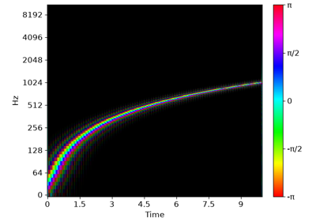
Rainbowgrams
Audio playback
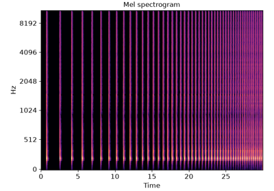
Beat tracking with time-varying tempo
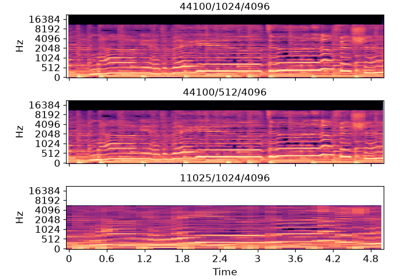
Presets
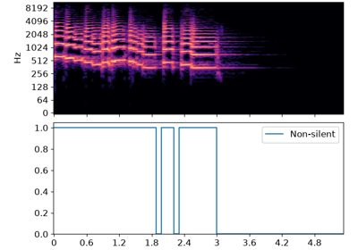
Viterbi decoding
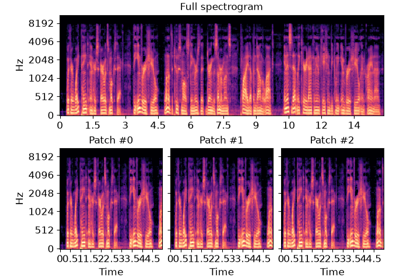
Efficient patch generation
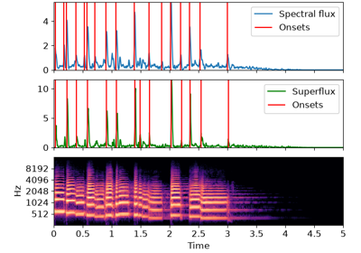
Superflux onsets
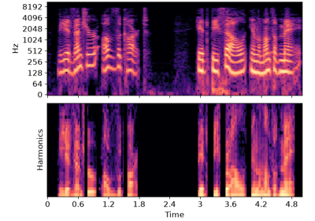
Harmonic spectrum
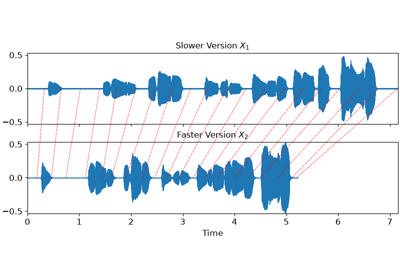
Music Synchronization with Dynamic Time Warping
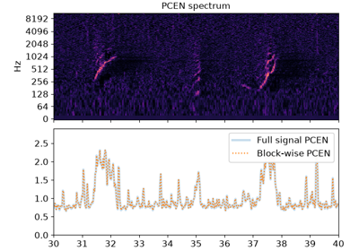
PCEN Streaming
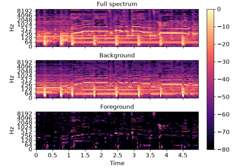
Vocal separation
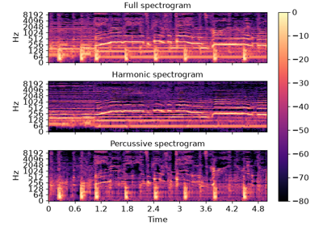
Harmonic-percussive source separation
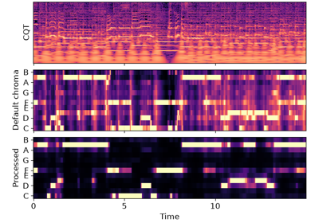
Enhanced chroma and chroma variants
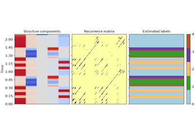
Laplacian segmentation
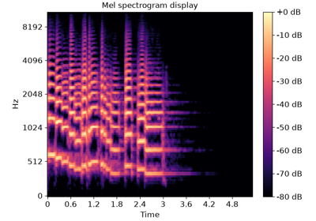
Using display.specshow
Gallery generated by Sphinx-Gallery